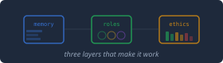
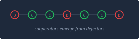
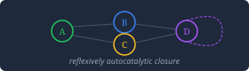
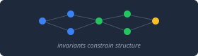
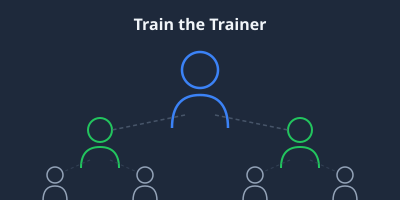
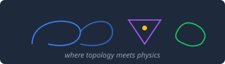
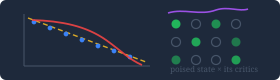
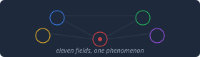

Web Annex
Companion materials, interactive tutorials, and research supplements
Tutorials
The Magnetosphere Tutorial Interactive
Animated introduction to Earth's invisible shield. Solar wind, magnetic field lines, Birkeland currentsElectric currents that flow along Earth's magnetic field lines between the magnetosphere and ionosphere. They carry energy from the solar wind down to the aurora. Discovered by Kristian Birkeland in 1908, confirmed by satellite in the 1960s., reconnection, substorms, and why it matters for infrastructure. Seven scroll-triggered animated scenes.
What Breaks When You Run Agent Memory Tutorial
Field notes from operating a persistent-memory agent: the seven memory systems, six real failure modes — from a three-week silent data loss to a search-index compartmentation leak — and why governance is the third pillar of an effective agent. An incident log, not a taxonomy.

Governing Your AI Tutorial Interactive
Memory is solved. Governance isn't. How ungoverned memory produces sycophancy, context leakage, and correction decay — and the three architectural layers that make it safe. Includes failure matrix and a practical build path from 15 minutes to full system.

Coevolving Machines and the Social Threshold Tutorial Interactive
Interactive evolutionary game theory simulation based on John H. Miller's research. Explores how simple adaptive agents produce complex cooperative dynamics, phase transitionsAbrupt qualitative changes in a system's behavior at a critical parameter value. Water freezing, magnets losing magnetism, ecosystems collapsing — same mathematical structure, different substrates. in social systems, and the emergence of collective behavior from individual strategy.

Autocatalytic Closure for the Working Mathematician Tutorial
Kauffman's autocatalytic setsSelf-sustaining networks where every component is produced by reactions within the network itself. Nothing external is needed except a food set. The mathematical framework for self-organization across chemistry, biology, and computation. presented as formal mathematics. Covers RAF theory (reflexively autocatalytic, food-generated sets), closure properties, the percolation phase transition in random catalytic networks, and the connection to origin-of-life chemistry. Revised edition.

Structure from Topology Tutorial
A systems-thinking worked example: how topological invariants constrain and predict the structure of physical systems. From abstract invariants to concrete observable consequences.

Claude Code Train-the-Trainer Program
Five-day intensive hands-on workshop, cohorts of 10. Your people become expert-level Claude Code trainers. They train everyone else. Permanent capability, not a recurring dependency.

Where the Topology Lives Tutorial
How topological order emerges in two-dimensional systems. Covers the quantum Hall effect, anyonic statistics, braiding, and why topology provides error protection. Bridges abstract mathematics to the physical systems where these phenomena appear.

Physical Systems × Feature Chart Interactive
Interactive working document mapping ten physical systems against five feature clusters. Clickable matrix, coverage diagram, endpoint characterization, gap analysis, and research targets.
Autocatalytic Closure (Original) Tutorial
First edition of the autocatalytic closure tutorial. Superseded by the revised v2, retained for reference.

Fibonacci Anyon Fusion Algebra Tutorial Interactive
Animated introduction to the Fibonacci anyon model. Covers fusion rules (τ×τ = 1+τ), the Fibonacci dimension sequence, fusion trees, braiding as quantum gates, and the connection to topological quantum computationA model of quantum computing where information is encoded in the braiding patterns of quasiparticles called anyons. Because the braid's topology is a global property, local perturbations cannot corrupt the computation — fault tolerance is built into the physics, not bolted on.. Eight sections with replay-able SVG animations.

Shadows of the Poised State Research Interactive
Survey of twelve candidate systems scored against a five-feature framework. Six cross-cutting patterns, twelve falsifiable predictions with specific failure conditions, and a scorecard.

The Poised State and Its Critics Research Interactive
Has anyone seriously studied the poised state? A guided reading path through thirty years of claim and rebuttal, with an interactive latent-variable machine showing how one hidden driver manufactures a power law from units that are not coupled at all.
Four-Way Satellite Convergence Tutorial
SKT/STF boundary diagnosis using four independent satellite datasets. Cross-validation of magnetospheric tomography techniques with RBSP, Swarm, and IMAGE data.

Criticality Bridges — Physical Systems Tutorial Interactive
Six concrete physical systems where critical phenomenaThe behavior of physical systems near a phase transition — where correlations extend across the entire system, fluctuations diverge, and the system becomes scale-invariant. The same mathematical structure appears in magnets, fluids, neural networks, and ecosystems. demonstrably couple scientific domains. Gene regulatory networks, BZ reaction, cortical neural tissue, immune system, magnetic skyrmions, and Earth's magnetosphere.

Domain Convergence — An Animated Introduction Tutorial Interactive
How eleven scientific fields independently discovered different faces of the same physical phenomenon. Covers domain clusters, seven bridges, scale invarianceA system looks the same at every magnification — zoom in or out and the statistical structure is unchanged. Near a critical point, this self-similarity emerges spontaneously and connects microscopic physics to macroscopic behavior. It is the mechanism that makes universality possible. as stitching mechanism, the AC bridge structural identity, and the emergent property stack.
Content-Selective Search De-Indexing Report
Reproducibility report documenting content-selective removal of specific pages from search engine indices. Four test cases and two controls across Cryptome, Substack, and Slashdot, with methodology for independent verification.
Research
Domain Convergence Research Research Interactive
Systematic investigation into structural relationships between eleven scientific domains. Interactive tutorials, computational experiments (NKS braiding search, lattice dynamics, anyon family sweep), and key findings on cross-domain bridges.
Multi-Critical Systems Research Interactive
Six physical systems where critical phenomena, topological order, and autocatalytic closure co-occur: glass transition, active matter, cardiac tissue, protein folding, brain, and tokamak H-mode pedestal.
Letters
Design
$